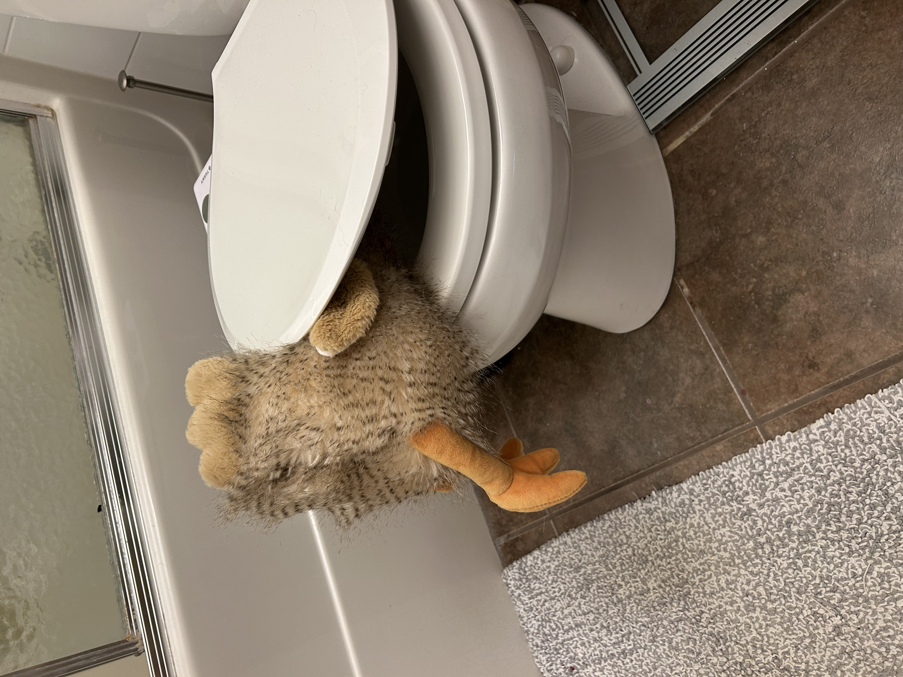

Thank you all for bringing your beautiful presences to February Party. From the ball gowns, to Neil's dapper waist coat, and Rena in Red's ready-to-party vibe, you all brought the ENERGY that makes a Feb party great. You brought the loud singing, the dancing without a care, the goofy antics, and the livers required to imbibe on some great cocktails.
Huge thank you to the committee. Rena, David, Kari, Tiffany: this party literally would NOT have been green lit without you all sitting on David's back porch in late Augustish and saying "we'd help you plan that". You are the reason this party happened, and I'm very grateful for your friendship and community give-a-shit!
The bar would NOT have happened without the metric ton of work that Andy put into setup of the bar and helping with shopping and the like. So many hours. Thank you bro. Shout out to Olivier for being Andy's day-of backup. And of course, the menu only exists thanks to Liz flexing her creative mixology mind into a glass.
Eric, I so appreciated your offer to DJ the party, and to shape it into a mix of music that everyone could enjoy and be excited about. Thank you!
I always love seeing how fast a mob of hungry adults who've been drinking can devour 11 large pizzas. You didn't disappoint. You are all truly the best kind of animal.
And thank you for once again proving that Under the Sea is somehow one of the best karaoke songs there is. And how pink pony club is the anthem we all need in our lives every once in awhile. And I'll always remember Brown Sugar and Muffin Man joining forces with the singular Meat Sack to create a tasty Ginuwine meal. God or her equivalents hath put us on this planet for such moments.
I experienced sympathetic joy seeing Troy receiving his mason jar chalice and Kera's shocked and delighted reaction to it. Troy may you treasure it forever.
Thank you to Eddie for the $20 donation to Zayin's Warhammer collection. He is very grateful and excited to purchase 1/5 of a warhammer box.
Some of you drove from Calgary for this and I couldn't more honoured, so thank you you to Dustin & Heidi and Julia & Steven for your presence.
This is the the prank turkey that had too much to drink that was perched on my toilet. I did not previously own a turkey, meaning someone took the time and attention to ensure that this particular turkey was puking in my toilet. I still don't know who did this, but I'm glad you could help your turkey friend find peace before Easter dinner.

A big thanks to those of you that rebuilt the pop can tower. It was critical to me continuing my status as a careful curator of pop can art (and hold status as reasonable father). My resume was bolstered last night.
Also, Andrea: it was NOT a pity invite. 😆
By the way, you collectively ate 11 pizzas in about 20 minutes.